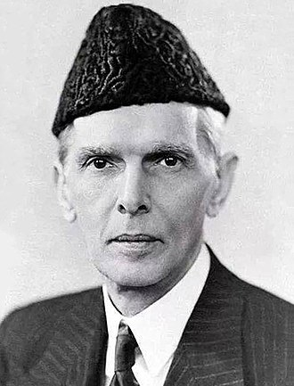

Quaid e Azam Muhammad Ali Jinnah
14 August 1947 – 11 September 1948
Father of Nation
Mohammed Ali Jinnah, محمد علی جناح also called Qaid-i-Azam (Arabic: “Great Leader”), (born December 25, 1876?, Karachi, India [now in Pakistan]—died September 11, 1948, Karachi), Indian Muslim politician, who was the founder and first governor-general (1947–48) of Pakistan. Jinnah was the eldest of seven children of Jinnahbhai Poonja, a prosperous merchant, and his wife, Mithibai. His family was a member of the Khoja caste, Hindus who had converted to Islam centuries earlier and who were followers of the Aga Khan. There is some question about Jinnah’s date of birth: although he maintained that it was December 25, 1876, school records from Karachi (Pakistan) give a date of October 20, 1875.
Biography
- Born: December 25, 1876, Karachi
- Died: September 11, 1948, Karachi
- Spouse: Rattanbai Jinnah (m. 1918–1929), Emibai Jinnah (m. 1892–1893)
- Siblings: Fatima Jinnah, Maryam Bai Jinnah, Shireen Jinnah, Ahmad Ali Jinnah, Bunde Ali Jinnah, Rahmat Ali Jinnah
- Party: Muslim League
- Children: Dina Wadia
- Height: 1.78 m